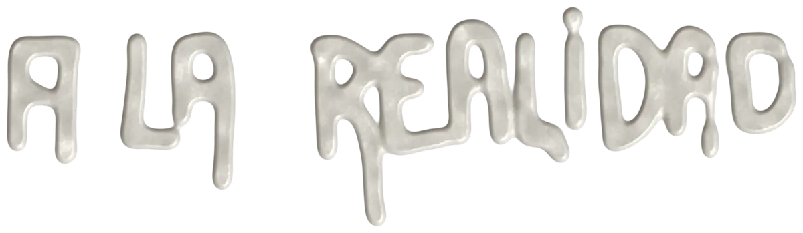

Director de contenidos en Setunum Media. Empecé en Setunum Producciones en 2021 como asistente de dirección creativa y en 2022 pasé a subdirector creativo. En 2025, cuando la IA generativa cambió nuestra forma de producir, lanzamos junto a Maximiliano Frattino Setunum Media, la rama de marketing, publicidad y posicionamiento de marcas, y asumí la dirección de contenidos.
Hoy lidero equipos de unas 15 personas por proyecto, entre equipo fijo y freelancers: planifico, diseño y gestiono la estrategia de las marcas, y acompaño cada pieza de la idea a la realización. Lo que sigue es llevar todo lo aprendido en estos cinco años a la dirección creativa completa.
Vengo del cine, del desarrollo de ideas y carpetas para proyectos narrativos. Por eso mi fuerte a la hora de pensar una campaña es el storytelling: encontrar la historia que una marca necesita contar y llevarla a cada formato.
Ver setunumproducciones.com
Experiencia
Director de contenidos, Setunum Media
2025 – hoySubdirector creativo, Setunum Producciones
2022 – 2025Asistente de dirección creativa, Setunum Producciones
2021 – 2022
Formación
Dirección Escénica de Ópera, ISA Teatro Colón
en cursoColumbia University, School of General Studies (admitido)
2023Dirección de Cine, Universidad del Cine
2020 – 2021
HERRAMIENTAS
PhotoshopGoogle FlowCanvaHiggsfieldSeedanceRunwayAll AI LLMMidjourneyPremiere ProLightroomFigmaNotion
De la idea a la realidad

Las marcas llegan con conceptos abstractos y sin un foco claro sobre qué historia contar. Mi trabajo es encontrar esa historia, convertirla en una estrategia y liderar los equipos que la ejecutan, de la primera reunión a la última pieza entregada.
1
Concepto
Defino la historia que la marca necesita contar en este momento y el territorio creativo que la sostiene.
2
Estrategia
Traduzco ese concepto en un plan de contenidos: formatos, canales, talentos y calendario de producción.
3
Dirección
Lidero equipos de alrededor de 15 personas entre producción, rodaje, IA generativa y posproducción, cuidando que cada pieza responda al concepto.
4
Ejecución
Acompaño la bajada a la realidad: campañas con influencers, vía pública, eventos en vivo y entrega final.
In English
Content director at Setunum Media, Buenos Aires. I joined Setunum Producciones in 2021 as creative direction assistant and became associate creative director in 2022. In 2025, as generative AI changed the way we produce, we launched Setunum Media, the company’s marketing, advertising and brand-positioning arm, where I lead content teams of around 15 people per project: planning, designing and managing content strategy for brands.
I come from film, developing ideas and pitch decks for narrative projects, so storytelling is my strength: brands usually arrive with abstract concepts, and my job is to find the story they need to tell and carry it across every format, from influencer campaigns to out-of-home and live events. I also study opera stage direction at the Instituto Superior de Arte del Teatro Colón.
Spanish (native) · Italian (bilingual) · English (fluent) · French (basic)
Read the full site in English